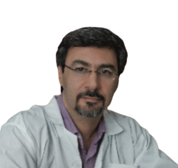
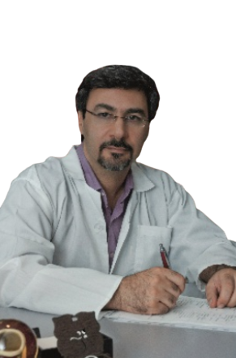

دکتر احمدعلی امیرغفران
پزشکی عمومی در سال 1369 از دانشگاه علوم پزشکی شیراز
تخصص جراحی عمومی در سال 1373 از دانشگاه علوم پزشکی شیراز
فوق تخصص جراحی قلب وعروق در سال 1376 از دانشگاه لندن
رئیس بخش جراحی قلب شیراز به مدت چهارده سال
(SUMS) عضو هیئت علمی دانشگاه علوم پزشکی شیراز
(ISCS)عضو انجمن جراحان قلب ایران
(IST)عضو انجمن پیوند ایران
(EACTS)عضو انجمن جراحان قلب اروپا
(AS CVTS)عضو انجمن جراحان قلب آسیا
محل کار : بیمارستان شهید فقیهی،نمازی و دنا
تلفن : 071-36280101
فاکس : 071-36280888
Email : amirghofranaa@yahoo.com
اعمال جراحی مختلفی برای اولین بار در ایران یا اولین بار در جهان توسط دکتر امیر غفران انجام شده است که لیست تعدادی از آنها در زیر دیده می شود
First World
First World Operation: Right heart operation without cardiopulmonary bypass, the use of temporary TCPC
First World Operation: Trans-annular RVOT patch with Inflow occlusion technique
First World Operation: Iatrogenic RV _ Aorta Neo-connection
First World Operation: Septal cusp creation in Ebstein anomaly Repair
First World Operation: Mitral repair with no Knot-on-cusp technique
First World Operation: Innominate vein substitusion for absent pulmonary artery
First World Operation: Novel technique for complex tricuspid valve disease ( Cusp augmentation by complete tricuspid annular detachment)
First World Operation: Intra-operative creation of native valvefor Redo PVR
First World Operation: RAA valve creation from right atrial appendage in patients with TOF
First World Operation: Minimally invasive approach to RCA Translocation for Intertruncal RCA
First National
First National Operation: Ross – Konno operation
First National Operation: Use of UDVP for VSD closure
First National Operation: Center for minimally invasive mitral valve repair
First National Operation: Florida sleeve operation
First National Operation: Direct Hepatic vein to Azygos connection ofter awashima repair
First National Operation: Total RV Exclusion for End – Stage arrhythmogenic RV dysfunction. ( ARVD )
First National Operation: Florida Sleeve Valve Sparing aortic root replecment
First National Operation: Excion of atrial tumor by minimally invasive approach
First National Operation: Bental Aortic root replecment by minimally invasive approach